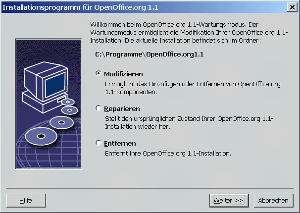

| << zurück | Inhalt |
5 Anhang
Der Anhang enthält Infos zum Druckerverwaltungsprogramm in der Solaris™-Betriebsumgebung und unter Linux. Er enthält auch Informationen über das Ändern, Reparieren und Deinstallieren von OpenOffice.org™.
Einrichten von Drucker, Fax und Schriften unter UNIX®-Plattformen
Unter Unix®-Plattformen wird das Druckerverwaltungsprogramm spadmin mitgeliefert, um Ihnen beim Einrichten von Druckern, Fax und Schriften für die Verwendung mit OpenOffice.org zu helfen.
Das Druckerverwaltungsprogramm spadmin rufen Sie folgendermaßen auf:
Wechseln Sie in das Verzeichnis {installpath}/program.
Geben Sie ein: ./spadmin
Nach dem Start wird das Fenster des Druckerverwaltungsprogramms spadmin angezeigt.
Bei einer Serverinstallation meldet sich der Systemadministrator zunächst als Benutzer root im System an und startet das Druckerverwaltungsprogramm spadmin. Der Administrator erstellt dann eine allgemeine Druckerkonfigurationsdatei mit dem Namen {installpath}/share/psprint/psprint.conf für alle Benutzer. Alle Änderungen sind sofort für alle Benutzer verfügbar.
Der Systemadministrator kann auch Schriften für alle Benutzer zur Netzwerkinstallation hinzufügen. Diese Schriften sind jedoch erst nach dem Neustart von OpenOffice.org verfügbar.
Einrichten von Druckern
Unter
UNIX-Plattformen bietet
Hinzufügen von Druckern
Klicken Sie auf die Schaltfläche Neuer Drucker.
Wählen Sie die Option Drucker anlegen und klicken Sie auf Weiter.
Wählen Sie einen passenden Treiber für Ihren Drucker. Wenn Sie keinen PostScript-Drucker verwenden oder Ihr Modell nicht aufgelistet ist, verwenden Sie den Treiber Generic Printer oder befolgen Sie nachstehende Schritte. Sie können auch neue Treiber mit der Schaltfläche Importieren hinzufügen oder nicht mehr benötigte Treiber mit der Schaltfläche Löschen entfernen. Klicken Sie auf Weiter.
Wählen Sie eine Kommandozeile aus, mit der an Ihren Drucker gedruckt werden kann (z.B. lp -d my_queue). Klicken Sie auf Weiter.
Benennen Sie den Drucker und legen Sie fest, ob er der Standarddrucker sein soll. Klicken Sie auf Fertig stellen.
Zum Drucken einer Testseite klicken Sie auf Testseite. Wenn die Testseite nicht oder nicht korrekt gedruckt wird, überprüfen Sie alle Einstellungen gemäß der Beschreibung unter Druckereinstellungen ändern.
Druckertreiber bei OpenOffice.org
Bei der Installation eines nicht PostScript fähigen Druckers müssen Sie Ihr System so einrichten, dass PostScript in die Sprache des Druckers konvertiert werden kann. Wir empfehlen die Verwendung gängiger PostScript-Konvertierungs-Software, wie z.B. Ghostscript (http://www.cs.wisc.edu/~ghost/).
Sie sollten in diesem Fall den Generic Printer einrichten. Beachten Sie auch die korrekten Einstellungen der Seitenränder.
Wenn Sie einen PostScript™ fähigen Drucker benutzen, sollten Sie immer eine Beschreibungsdatei für den Drucker installieren (PostScript Printer Definition PPD), damit Sie spezifische Druckerfunktionen wie die Papierschachtauswahl, den Duplexdruck und alle eingebauten Schriften verwenden können. Sie können auch den generischen Druckertreiber verwenden, da er die wichtigsten Daten enthält und für die meisten Drucker geeignet ist. In diesem Fall müssen Sie auf die Auswahl von Papierschächten verzichten und die Seitenränder korrekt einstellen.
Einige PPD-Dateien sind standardmäßig installiert. Wenn für Ihren Drucker keine passende PPD-Datei installiert ist, können Sie unter http://www.adobe.com/products/printerdrivers/ verschiedene PPD-Dateien finden. Sie können auch den Hersteller Ihres Druckers nach PPD-Dateien fragen.
Import von Treibern beim Anlegen eines neuen Druckers
Klicken Sie im Dialog Treiberauswahl auf Importieren.
Klicken Sie auf Durchsuchen, um das Verzeichnis auszuwählen, in dem Sie die PPD-Dateien entpackt haben.
Im Listenfeld Treiberauswahl wählen Sie dann den Druckertreiber aus, den Sie installieren möchten.
Klicken Sie auf OK.
Löschen von Treibern beim Anlegen eines neuen Druckers
Wählen Sie den Druckertreiber aus.
Klicken Sie auf Löschen.
Vergewissern Sie sich, dass Sie nicht den generischen Druckertreiber löschen, und bedenken Sie, dass aus Netzwerkinstallationen gelöschte Treiber auch anderen Benutzern nicht mehr zur Verfügung stehen, die die gleiche Serverinstallation verwenden.
Falls der Drucker über mehr eingebaute Schriften verfügt als die üblichen PostScript-Schriften, müssen Sie auch die AFM-Dateien für diese zusätzlichen Schriften laden. Kopieren Sie die AFM-Dateien in das Verzeichnis {installpath}/share/psprint/fontmetric oder in das Verzeichnis {installpath}/user/psprint/fontmetric. AFM-Dateien können Sie z.B. unter ftp://ftp.adobe.com/pub/adobe/type/win/all/afmfiles/ finden.
Ändern der Druckereinstellungen
Wählen Sie im Druckerverwaltungsprogramm spadmin den Drucker im Listenfeld Installierte Drucker aus und klicken Sie auf Eigenschaften. Der Dialog Eigenschaften mit mehreren Registern wird angezeigt. Hier können Sie die Einstellungen vornehmen, die entsprechend der PPD-Datei des gewählten Druckers verwendet werden.
Wählen Sie im Register Kommando Kommando. Sie können überflüssige Kommandos mit der Schaltfläche Entfernen aus der Liste entfernen.
Im Register Papier können Sie u.a. das Papierformat und den Papierschacht vorgeben, der bei diesem Drucker standardmäßig verwendet werden soll.
Im Register Gerät können Sie spezielle Optionen für Ihren Drucker aktivieren. Wenn Ihr Drucker nur schwarzweiß drucken kann, wählen Sie unter Farbe "Graustufen" aus, ansonsten wählen Sie "Farbe". Wenn die Umsetzung auf Graustufen zu schlechten Ergebnissen führt, können Sie auch unter Farbe Farbe wählen und die Umsetzung dem Drucker oder dem PostScript-Emulator überlassen. Weiter können Sie in diesem Register die Genauigkeit, mit der Farben beschrieben werden, sowie die PostScript-Ebene einstellen.
Das Register Schriftersetzung ermöglicht Ihnen, für jede auf Ihrem Computer installierte Schriftart eine im Drucker vorhandene Druckerschriftart zu wählen. Damit können Sie die zum Drucker zu übertragenden Datenmengen deutlich verringern. Die Schriftersetzung kann für jeden Drucker einzeln ein- oder ausgeschaltet werden.
Außerdem sollten Sie bei Verwendung des generischen Druckertreibers im Register Weitere Einstellungen die Seitenränder korrekt einstellen, damit Ihr Ausdruck nicht abgeschnitten wird. Sie können auch im Feld Bemerkungen eine Beschreibung eingeben, die dann im Dialog Drucken angezeigt wird.
Einige dieser Einstellungen können für den aktuellen Ausdruck auch im Dialog Drucken oder im Dialog Druckereinstellungen in OpenOffice.org über die Schaltfläche Eigenschaften eingestellt werden.
Umbenennen oder Löschen von Druckern
Wählen Sie im Listenfeld Installierte Drucker einen Drucker aus.
Um den ausgewählten Drucker umzubenennen, klicken Sie auf Umbenennen. Geben Sie im daraufhin angezeigten Dialog einen passenden Namen ein und klicken Sie auf OK. Der Name muss eindeutig sein und sollte so gewählt werden, dass Sie Drucker und Verwendungszweck erkennen können. Die Druckernamen müssen für alle Benutzer gleich lauten, da beim Austauschen von Dokumenten auch der ausgewählte Drucker unverändert bleibt, wenn beim Empfänger ein Drucker mit dem gleichen Namen vorhanden ist.
Um den ausgewählten Drucker zu löschen, klicken Sie auf Entfernen. Der Standarddrucker oder ein Drucker, der vom Systemadministrator in einer Serverinstallation angelegt wurde, kann mit diesem Dialog nicht entfernt werden.
Um den im Listenfeld Installierte Drucker ausgewählten Drucker zum Standarddrucker zu erklären, doppelklicken Sie auf seinen Namen oder klicken Sie auf die Schaltfläche Standard.
Verwendung der Faxfunktionalität
Wenn Sie auf Ihrem Computer ein Faxpaket wie z.B. Efax oder HylaFax installiert haben, können Sie mit OpenOffice.org Faxe verschicken.
Klicken Sie auf Neuer Drucker. Daraufhin wird der Dialog Drucker hinzufügen geöffnet.
Wählen Sie Eine Faxlösung anbinden. Klicken Sie auf Weiter.
Wählen Sie, ob Sie den Standardtreiber oder einen anderen Druckertreiber verwenden möchten. Falls Sie nicht den Standardtreiber verwenden, wählen Sie den passenden Treiber aus. Klicken Sie auf Weiter.
Geben Sie im folgenden Dialog eine Kommandozeile ein, mit der Sie das Fax ansprechen möchten. Bei jedem gesendeten Fax wird in der Kommandozeile jeweils "(TMP)" durch eine temporäre Datei und "(PHONE)" durch die Telefonnummer des Empfängerfaxgerätes ersetzt. Wenn "(TMP)" in der Kommandozeile vorkommt, wird der Postscript-Code in einer Datei übergeben, andernfalls über die Standardeingabe (d.h. als Pipe). Klicken Sie auf Weiter.
Geben Sie Ihrem neuen Faxdrucker einen Namen und bestimmen Sie, ob die im Text markierten Telefonnummern (siehe unten) aus dem Ausdruck entfernt werden sollen oder nicht. Klicken Sie auf Fertig stellen.
Ab jetzt können Sie einfach Faxe versenden, indem Sie auf den gerade angelegten Drucker drucken.
Geben Sie die Faxnummer im Dokument als Text ein. Sie können auch ein Feld eingeben, das die Faxnummer aus der aktiven Datenbank übernimmt. Die Faxnummer muss in jedem Fall durch die Zeichen @@# eingeleitet und durch die Zeichen @@ abgeschlossen werden. Eine gültige Eingabe hätte die Form @@#1234567@@.
Wenn diese Zeichen einschließlich der Telefonnummer nicht gedruckt werden sollen, aktivieren Sie im Register Kommando unter Eigenschaften die Option Faxnummer wird aus der Ausgabe entfernt. Wenn im Dokument keine Telefonnummer angegeben wird, wird sie nach dem Ausdruck in einem Dialog abgefragt.
Sie können in OpenOffice.org auch eine Schaltfläche zum Senden von Faxen an ein Standard-Faxgerät aktivieren. Klicken Sie hierzu mit der rechten Maustaste auf die Funktionsleiste, öffnen Sie das Untermenü Sichtbare Schaltflächen und klicken Sie auf die Schaltfläche Standard-Fax senden. Sie können unter Extras - Optionen - Textdokument - Drucken einstellen, welches Fax beim Betätigen dieser Schaltfläche verwendet wird.
Vergessen Sie nicht, für jedes Fax einen eigenen Druckjob zu erzeugen, da sonst der erste Empfänger alle Faxe erhält. Wählen Sie im Dialog Datei - Serienbrief die Option Drucker und markieren Sie dann das Markierfeld Einzelne Druckjobs erzeugen.
Anbinden eines PostScript-PDF-Konverters
Wenn auf Ihrem
Computer ein PostScript-PDF-Konverter wie z.B. Ghostscript oder Adobe
Acrobat Distiller installiert ist, können Sie mit
Klicken Sie auf Neuer Drucker. Daraufhin wird der Dialog Drucker hinzufügen geöffnet.
Wählen Sie Einen PDF Konverter anbinden. Klicken Sie auf Weiter.
Wählen Sie, ob Sie den Standardtreiber, den Acrobat Distiller-Treiber oder einen anderen Treiber verwenden wollen. Der Treiber "Generic Printer (T42 aktiviert)" zieht Typ-42-Schriften gegenüber Typ-3-Schriften vor. Dieser Treiber ist eine gute Wahl für Ausgaben an einen PostScript-Emulator. Klicken Sie auf Weiter.
Geben Sie im folgenden Dialog eine Kommandozeile für den PostScript-PDF-Konverter ein. Geben Sie das Verzeichnis ein, in dem die PDF-Dateien abgelegt werden sollen. Wenn Sie kein Verzeichnis angeben, wird das Homeverzeichnis des Benutzers verwendet. In der Kommandozeile wird "(TMP)" durch eine temporäre Datei und "(OUTFILE)" durch die Zieldatei ersetzt, deren Name aus dem Dokumentnamen erzeugt wird. Wenn "(TMP)" in der Kommandozeile vorkommt, wird der Postscript-Code in einer Datei weitergegeben, andernfalls über die Standardeingabe (d.h. als Pipe). Falls sich Ghostscript oder Adobe Acrobat Distiller im Suchpfad befinden, können Sie eine der vorgegebenen Kommandozeilen verwenden. Klicken Sie auf Weiter.
Geben Sie Ihrem neuen PDF-Konverter einen Namen. Klicken Sie auf Fertig stellen.
Ab jetzt können Sie PDF-Dokumente erzeugen, indem Sie an den gerade angelegten Konverter drucken.
Installieren von Schriften
Wenn Sie mit
Deshalb werden Ihnen bei einem Textdokument in der Schriftauswahlbox nur die Schriften angezeigt, die auch gedruckt werden können, da davon ausgegangen wird, dass Sie nur die Schriften verwenden möchten, die auch ausgedruckt werden können.
Bei einem HTML-Dokument oder im Online-Layout werden Ihnen nur Schriften angeboten, die auf dem Bildschirm zur Verfügung stehen.
Andererseits können Sie bei Tabellendokumenten und Zeichnungen alle Schriften verwenden, die gedruckt oder auf dem Bildschirm dargestellt werden können.
OpenOffice.org versucht, die Bildschirmanzeige dem Ausdruck anzugleichen (WYSIWYG = what you see is what you get). Mögliche Probleme werden im Dialog Format - Zeichen unten angezeigt.
Hinzufügen von Schriften
Sie können
zusätzliche Schriften in
Um zusätzliche
Schriften in
Starten Sie spadmin.
Klicken Sie auf Schriften.
Im Dialog werden alle für
OpenOffice.org hinzugefügten Schriften aufgelistet. Sie können Schriften auswählen und dann mithilfe der Schaltfläche Entfernen entfernen bzw. mithilfe der Schaltfläche Hinzufügen hinzufügen.Klicken Sie auf Hinzufügen. Der Dialog Schriften hinzufügen wird angezeigt.
Geben Sie das Verzeichnis ein, aus dem Sie Schriften hinzufügen möchten. Betätigen Sie dazu die Schaltfläche ... und wählen Sie in dem Pfadauswahldialog das Verzeichnis aus oder geben Sie das Verzeichnis direkt ein.
Eine Liste der Schriften aus diesem Verzeichnis wird angezeigt. Wählen Sie die Schriften aus, die Sie hinzufügen möchten. Wenn Sie alle Schriften hinzufügen möchten, klicken Sie auf Alle markieren.
Mit dem Markierfeld Beim Hinzufügen nur Softlinks anlegen können Sie bestimmen, ob die Schriften in das Verzeichnis OpenOffice.org kopiert werden sollen oder ob dort nur symbolische Verknüpfungen angelegt werden sollen. Falls sich die hinzuzufügenden Schriften auf einem nicht ständig verfügbaren Datenträger (z.B. einer CD-ROM) befinden, sollten Sie die Schriften kopieren.
Klicken Sie auf OK. Die Schriften werden nun hinzugefügt.
Bei einer Serverinstallation wird zunächst versucht, die Schriften in diese zu installieren. Wenn der Benutzer hier keine Schreibrechte hat, werden die Schriften in die entsprechende Workstation-Installation installiert, so dass nur der installierende Benutzer darauf zugreifen kann.
Löschen von Schriften
Um Schriften zu löschen, gehen Sie wie folgt vor:
Starten Sie spadmin.
Klicken Sie auf Schriften.
Im daraufhin angezeigten Dialog werden alle zu OpenOffice.org hinzugefügten Schriften aufgeführt. Wählen Sie die Schriften aus, die Sie löschen möchten, und klicken Sie auf Löschen.
Sie können nur die Schriften löschen, die zu OpenOffice.org hinzugefügt wurden.
Umbenennen von Schriften
Sie können zu
Starten Sie spadmin.
Klicken Sie auf Schriften.
Wählen Sie die Schriften aus, die Sie umbenennen möchten, und klicken Sie auf Umbenennen.
Geben Sie im daraufhin angezeigten Dialog einen neuen Namen ein. Wenn die Schrift mehrere Namen enthält, stehen diese als Vorschlag im Kombinationsfeld, in dem Sie den neuen Namen eingeben.
Klicken Sie auf OK.
Wenn Sie mehrere Schriften zum Umbenennen wählen, wird für jede gewählte Schrift ein eigener Dialog angezeigt.
Wenn Sie eine TrueType Collection (TTC) ausgewählt haben, wird für jede der darin enthaltenen Schriften ein eigener Dialog angezeigt.
Installation eines Patches unter der Solaris™ Betriebsumgebung
Bevor Sie OpenOffice.org unter Solaris OE installieren können, müssen die System-Patches installiert werden, die in Kapitel "Systemanforderungen" auf Seite 10 beschrieben werden.
Um ein Solaris-System-Patch zu installieren, verwenden Sie das Verfahren, das im Folgenden für Patch #106327-08 skizziert wird. Das Patch dieses Beispiels ist im Zip-Format komprimiert und wurde von http://sunsolve.sun.com heruntergeladen.
Melden Sie sich mit Root-Rechten an:
su -
Erstellen Sie ein temporäres Verzeichnis zum Entpacken der komprimierten Patch-Datei, z. B. /tmp/patches.
mkdir /tmp/patches
Kopieren Sie die komprimierte Patch-Datei in dieses Verzeichnis und entpacken Sie sie dort:
unzip 106327-08.zip
Installieren Sie den Patch mit dem Kommando patchadd:
patchadd 106327-08
Nach erfolgreicher Installation des Patches können Sie das temporäre Verzeichnis entfernen:
rm -rf /tmp/patches
|
|
Zum Anzeigen einer Liste mit den bereits auf Ihrem System installierten Patches verwenden Sie die Befehle showrev -p oder patchadd -p. Zum Deinstallieren eines Patches verwenden Sie den Befehl patchrm. |
Ändern einer vorhandenen OpenOffice.org -Installation
Zum Ändern,
Reparieren oder Löschen einer bestehenden
Wenn Sie möchten, können Sie auch das Installationsprogramm von der Installations-CD ausführen.
-

Modifizieren
Die Option Modifizieren fügt Komponenten zu einer bestehenden Installation hinzu oder entfernt sie oder ändert Dateitypzuordnungen. Näheres über die Auswahl von Komponenten finden Sie in Kapitel "Komponentenauswahl" auf Seite 23.
Reparieren
Die Option Reparieren repariert eine beschädigte Installation, indem Sie die Systemregistrierungseinträge wiederherstellt und gelöschte Programmdateien wieder installiert.
Entfernen
Die Option Entfernen
löscht die
|
|
Wenn Sie
möchten, können Sie auch wählen, alle
Konfigurations- und Benutzerdateien aus dem
Unter Windows können manche Dateien erst nach einem System-Neustart gelöscht werden. |
Zum Entfernen der
Serverinstallation in einem Netzwerk löschen Sie den
Installationsparameter
Sie können folgende Parameter mit dem Installationsprogramm verwenden, um spezifische Aktionen durchzuführen:
Verwenden Sie setup -net oder -n, um die Serverinstallation zu beginnen.
Verwenden Sie setup -D:destination_path, um
OpenOffice.org im Verzeichnis zu installieren, das im Pfad angeben wird.Verwenden Sie setup -F:application_name, um unmittelbar nach der Installation die im Pfad angegebene Anwendung auszuführen.
Starten
von OpenOffice.org
mit Parametern
Wenn Sie
|
|
Bei der normalen
Arbeit ist die Verwendung von Kommandozeilenparametern nicht
erforderlich. Einige Parameter erfordern eine genauere Kenntnis
des technischen Hintergrunds der Näheres zu diesem Thema finden Sie unter www.openoffice.org. |
Starten von OpenOffice.org
von der Kommandozeile aus
Unter Windows wählen Sie im Windows-Menü Start Ausführen bzw. öffnen eine Shell unter UNIX-Plattformen.
Unter Windows geben Sie folgenden Text in das Textfeld Öffnen ein und klicken OK.
{install}\program\soffice.exe {parameter}Unter UNIX-Systemen geben Sie folgende Textzeile ein und drücken Eingabe:
{install}/program/soffice {parameter}Ersetzen Sie {install} durch den Pfad zu Ihrer Installation von OpenOffice.org (z.B. C:\Programme\Office oder ~/office).
Ersetzen Sie {parameter} erforderlichenfalls durch einen oder mehrere der folgenden Kommandozeilenparameter.
Gültige Kommandozeilenparameter
-
Parameter
Bedeutung
-help / -h / -?
Listet die verfügbaren Kommandozeilenparameter in einem Dialogfeld auf. -help zeigt einen ausführlichen Hilfetext an, -h einen kurzen.
-writer
Startet mit einem leeren Writer-Dokument.
-calc
Startet mit einem leeren Calc-Dokument.
-draw
Startet mit einem leeren Draw-Dokument.
-impress
Startet mit einem leeren Impress-Dokument.
-math
Startet mit einem leeren Math-Dokument.
-global
Startet mit einem leeren globalen Dokument.
-web
Startet mit einem leeren HTML-Dokument.
-minimized
Startet minimiert. Der Begrüßungsbildschirm wird nicht angezeigt.
-invisible
Startet im unsichtbaren Modus.
Weder das Start-Logo noch das erste Programmfenster sind sichtbar. OpenOffice.org kann jedoch gesteuert werden und Dokumente und Dialoge über API geöffnet werden.
Wenn OpenOffice.org mit diesem Parameter gestartet wird, kann es nur mit dem Task-Manager (Windows) oder dem Befehl Kill (UNIX-Systeme) beendet werden.
Er kann nicht zusammen mit -quickstart verwendet werden.
Näheres finden Sie im
OpenOffice.org -Entwicklerhandbuch.-norestore
Deaktiviert Neustart und Datei-Wiederherstellung nach einem Systemabsturz.
-quickstart
Aktiviert den Schnellstarter. Der Begrüßungsbildschirm wird nicht angezeigt.
-terminate_after_init
Registriert einige UNO-Dienste und beendet. Der Begrüßungsbildschirm wird nicht angezeigt.
Näheres finden Sie im
OpenOffice.org -Entwicklerhandbuch.-accept={UNO string}
Benachrichtigt
OpenOffice.org , dass bei der Erzeugung von "UNO Acceptor Threads" ein "UNO Accept String" verwendet wird.Näheres finden Sie im
OpenOffice.org -Entwicklerhandbuch.-userid={user id}
Legt ein Benutzerverzeichnis fest, das statt der Daten der Dateien soffice.ini, bootstrap.ini und sversion.ini verwendet wird.
Näheres finden Sie im OpenOffice.org-Entwicklerhandbuch.
-p {filename1} {filename2} ...
Druckt die Dateien {filename1} {filename2} ... auf dem Standarddrucker und beendet. Der Begrüßungsbildschirm wird nicht angezeigt.
Wenn der Dateiname Leerzeichen enthält, muss er zwischen Anführungszeichen gesetzt werden. (z.B. "C:\My File.sxw")
-pt {Printername} {filename1} {filename2} ...
Druckt die Dateien {filename1} {filename2} ... auf dem Drucker {printername} und beendet. Der Begrüßungsbildschirm wird nicht angezeigt.
Wenn der Dateiname Leerzeichen enthält, muss er zwischen Anführungszeichen gesetzt werden. (z.B. "C:\My File.sxw")
-o {filename}
Öffnet {filename} zum Bearbeiten, auch wenn es sich um eine Dokumentvorlage handelt.
-view {filename}
Erzeugt eine temporäre Kopie von {filename} und öffnet sie schreibgeschützt.
-n {filename}
Erzeugt ein neues Dokument unter Verwendung von {filename} als Dokumentvorlage.
-nologo
Deaktiviert den Begrüßungsbildschirm bei Programmstart.
-display {display}
Setzt die Umgebungsvariable DISPLAY auf UNIX-Plattformen auf den Wert {display}. Dieser Parameter wird nur vom Startscript für
OpenOffice.org auf UNIX-Plattformen unterstützt.-headless
Startet im "führungslosen Modus", der es ermöglicht die Anwendung ohne Benutzeroberfläche zu verwenden.
Dieser besondere Modus kann verwendet werden, wenn die Anwendung von externen Clients über API gesteuert wird.
Registrierung
von OpenOffice.org
Der
Registrierungsdialog wird beim zweiten Start von
Sie können den Registrierungsdialog ändern, indem Sie die Datei common.xml im Verzeichnis {installpath}/share/config/registry/instance/org/openoffice/Office/ bearbeiten. Um den Registrierungsdialog permanent zu deaktivieren, stellen Sie den Wert von RequestDialog unter Registrierung auf 0. Um den Menübefehl Registrierung permanent zu deaktivieren, stellen Sie ShowMenuItem unter Registrierung auf false.
<Registration> <RequestDialog cfg:type="int">0</RequestDialog> <ShowMenuItem cfg:type="boolean">false</ShowMenuItem> </Registration>
Erweiterung von OpenOffice.org
|
|
Näheres zum
Erstellen von Erweiterungen für |
Der spezielle
Paketmanager pkgch
wird vom
pkgchk <Schalter> [package1 package2 ...]
Schalter:
-
-s oder --shared
Prüft oder installiert Komponenten für den gemeinsamen Gebrauch
-r oder --renewal
Installiert alle Pakete nochmal (im Fall von Fehlern im Cache-Speicher)
-v oder --verbose
Druckt ausführliche Ausgaben bei der Installation
-l <Datei> oder --log <Datei>
Schreibt in ein benutzerdefiniertes Protokoll <Datei>
--strict_error
Beendet bei Fehlern die Paketinstallation sofort
--supersede_basic_libs
Überschreibt bereits bestehende, gleichnamige Basic-Bibliotheken
-h oder --help
Gibt einen kurzen Hilfetext aus
Wenn Sie pkgchk ohne Parameter ausführen, wird nur das Verzeichnis {office_install}/user/uno_packages nach folgenden Änderungen durchsucht:
Wenn ein neues Erweiterungspaket gefunden wird, wird es für den aktuellen Benutzer installiert.
Wenn eine Erweiterungspaketdatei einer installierten Erweiterung fehlt, wird die Registrierung der entsprechenden Erweiterung entfernt.
Wenn eine Datei für ein Erweiterungspaket von der installierten Erweiterung abweicht, wird die entsprechende Erweiterung aktualisiert.
Wenn Sie pkgchk mit einem Paketdateinamen und Pfad als Parameter starten, wird die entsprechende Paketdatei in das Verzeichnis {office_install}/user/uno_packages kopiert und installiert.
Wenn Sie pkgchk mit -shared oder -s und einem Paketdateinamen und Pfad als Parameter starten, wird die entsprechende Paketdatei in das Verzeichnis {office_net_install}/share/uno_packages kopiert und für alle Benutzer einer Netzwerkinstallation (gemeinsamen Installation) installiert.
Installieren, Aktualisieren und Entfernen von Erweiterungen für einen Einzelbenutzer
Schließen Sie alle
OpenOffice.org Fenster.Stellen Sie sicher, dass Sie alle
OpenOffice.org -Anwendungen einschließlich Schnellstarter beenden.Wählen Sie eine der folgenden Vorgehensweisen:
Zum Installieren eines Erweiterungspakets kopieren Sie das Paket in das Verzeichnis {office_install}/user/uno_packages.
Zum Aktualisieren eines Erweiterungspakets kopieren Sie das aktualisierte Paket in das Verzeichnis {office_install}/user/uno_packages und stellen sicher, dass das vorhandene Paket überschrieben wird.
Zum Entfernen eines Erweiterungspakets löschen Sie das Paket im Verzeichnis {office_install}/user/uno_packages.
Führen Sie pkgchk im Verzeichnis {office_install}/program aus.
Das Tool Paketmanager durchsucht das Verzeichnis {office_install}/user/uno_packages nach Erweiterungspaketen und führt alle erforderlichen Installations- bzw. Deinstallationsschritte durch. Nachdem das Paket installiert worden ist, dürfen Sie die Paketdatei nicht aus dem Verzeichnis entfernen. Eine Liste aller vom Paketmanager ausgeführten Aktionen können Sie in {office_install}/user/uno_packages/cache/log.txt finden.
Installieren, Aktualisieren und Entfernen von Erweiterungen für mehrere Benutzer
Schließen Sie alle
OpenOffice.org -Fenster.Stellen Sie sicher, dass Sie alle
OpenOffice.org -Anwendungen lokal und im Server beenden. Dies gilt auch für den Schnellstarter.Wählen Sie eine der folgenden Vorgehensweisen (wobei {office_net_install}/share das gemeinsame Verzeichnis der Serverinstallation ist):
Zum Installieren eines Erweiterungspakets kopieren Sie das Paket ins Verzeichnis {office_net_install}/share/uno_packages.
Zum Aktualisieren eines Erweiterungspakets kopieren Sie das aktualisierte Paket in das Verzeichnis {office_net_install}/share/uno_packages und stellen sicher, dass das vorhandene Paket überschrieben wird.
Zum Entfernen eines Erweiterungspakets löschen Sie das Paket im Verzeichnis {office_net_install}/share/uno_packages.
Führen Sie pkgchk -shared im Verzeichnis {office_net_install}/program aus.
Das Tool Paketmanager durchsucht das Verzeichnis {office_install}/user/uno_packages nach Erweiterungspaketen und führt alle erforderlichen Installations- bzw. Deinstallationsschritte durch. Nachdem das Paket installiert worden ist, dürfen Sie die Paketdatei nicht aus dem Verzeichnis entfernen. Eine Liste aller vom Paketmanager ausgeführten Aktionen können Sie in {office_install}/user/uno_packages/cache/log.txt finden.
| << zurück | Seitenanfang | |
| (Mehrbenutzer- und Netzwerkinstallation) |